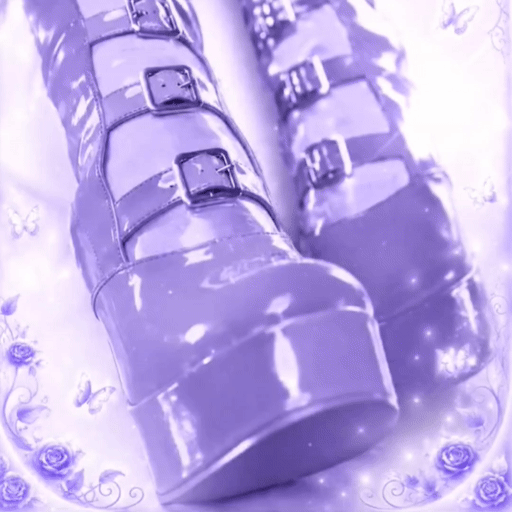

kruzix ♂
exist. dream. create.
Idle
0:00
0:00
心の花を育てよう— cultivate the flower in your heart
. . .
About
short info
nicknamekruzix
gender♂
age17
birthday08 / 14
languagesen / ru
Dream
a little piece of me